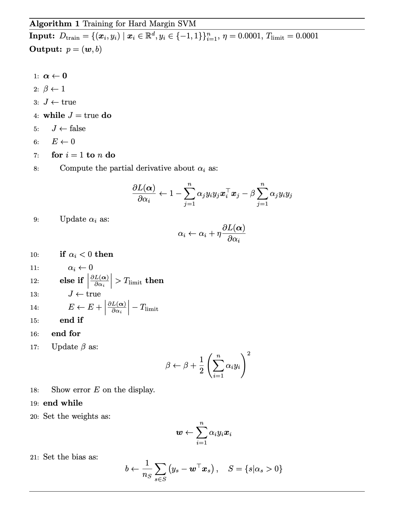

Research Projects

DRepT
DRepT is a research project for anomaly detection based on transfer of defect representation with a transmittance mask. It focuses on generating and transferring realistic defect characteristics to improve industrial visual inspection.
This project better represents the research side of the portfolio: industrial anomaly detection, pseudo-defect modeling, and practical methods designed for real manufacturing scenarios.
View on GitHub →Open Source Projects

PyTorch C++ Samples
A large-scale open-source project for deep learning implementations in C++ using LibTorch. It covers image classification, object detection, generative models, diffusion-related architectures, and many modern deep learning systems.
This project shows practical implementation skill in serious depth, not just model usage. It reflects long-term work on building and organizing deep learning systems in C++.
View on GitHub →
SVM C++ Samples
A C++ implementation project focused on Support Vector Machines and related machine learning methods. It highlights understanding of classical machine learning algorithms at the implementation level, not only at the library-usage level.
This project helps show breadth beyond deep learning by covering optimization-based traditional methods in a clean and engineering-oriented form.
View on GitHub →GMM C++ Samples
A C++ project for Gaussian Mixture Models and related probabilistic modeling techniques. It reflects strong interest in statistical machine learning, density modeling, and implementation of mathematically grounded methods.
This project is especially relevant to research involving anomaly generation, distribution modeling, and representation of structured variations in data.
View on GitHub →LLM C++ Samples
A C++ implementation project centered on large language model architectures and related components. It demonstrates interest in modern foundation models and the ability to explore them from the implementation side.
This project expands the portfolio beyond computer vision and shows readiness to work across multiple AI domains, including language modeling.
View on GitHub →LightGrad
lightgrad is a lightweight project for understanding and implementing automatic differentiation and the core mechanisms behind deep learning frameworks.
It shows low-level understanding of training systems themselves, not just model construction, and gives the portfolio a stronger systems and educational-engineering dimension.
View on GitHub →